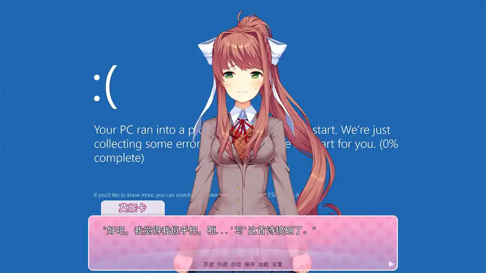
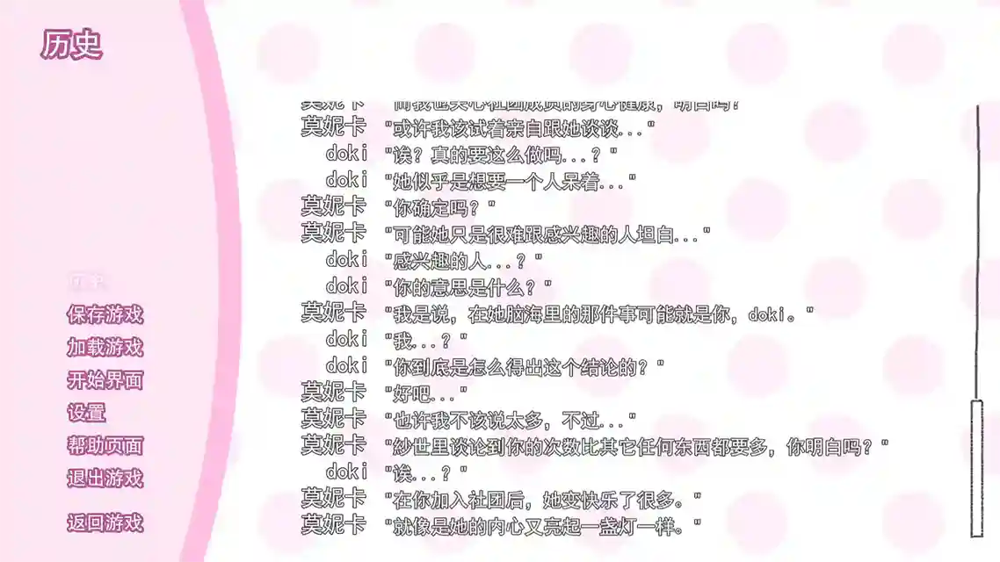
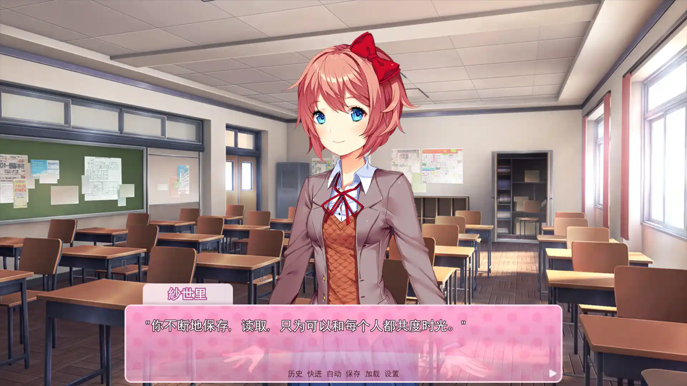

|2023-02-04|
警告！本文不适合儿童和心理承受能力较弱者阅读！
警告！本文对游戏有剧透，请确定已经至少通关一次后再进行阅读！
警告！本文同时提及了 弹丸论破初代 的部分剧情！
零
《心跳文学部》（心跳~心跳~文学部；Doki Doki Literature Club!，以下简称 ddlc），被打上「心理恐怖」标签的 Galgame，同时也是一款 Meta game。
壹
其实我很早就听说过 ddlc 的大名，并且已经在经典的桥段（删除 monika.chr）的地方被剧透。（真的很可惜……毕竟一辈子只有这一次体验——还好只有这一处） 。直到最近我才知道游戏本体是免费的，所以一直把掌机当主力游戏平台的我才打开了尘封的 steam 账号。
贰
说实话，这是我第一次玩 Galgame。起初我对游戏写诗系统有点不适应，在游戏第二天后， 我决定攻略纱世里——实在无法辜负青梅竹马的感情。
但是从第三天开始（因为多周目的缘故，我天数可能有点记串了，不过玩过的肯定看事件就知道我说的是哪天了） ，我们的部长同志就已经开始大展淫威——
（请忽略我不知道起什么名字就把游戏名字填上这档子事）
两天之后，那件事就发生了。
说实话，我当时并没有感到十分痛心。因为毕竟我经历过一次——弹丸论破初代的舞园沙耶香之死。
然后就是二周目，Dan Salvato 施展了自己对「心理恐怖」的全部功力……这里就不放图了。因为这种东西可能初次看还不觉得吓人，但是要是看截图回味起来恐怕不太舒服。
三周目，just monika 空间。我并没有停留太长时间……从而导致了我忽略了大量对话。
四周目，没错，我触发了普通结局。
叁
随着《Your Reality》ED 响过，游戏文件、CG 被莫妮卡删除，最后只剩下莫妮卡的信。我一般不会去追求游戏的全收集，但是 ddlc 的游戏形式，确实很激发人的好奇心。
纱世里、夏树、優里的九张 CG 是需要在纱世里自杀事件前，反复 sl 进行收集的。随着我慢慢揭开每个角色的全貌，我开始对莫妮卡产生越来越多的不满——她的存在甚至影响到了我对游戏的控制。
面对 晴天娃娃 时，我特意读回了跟纱世里告白的存档。不过这次在自杀 CG 中，我注意到了一个细节。左上有一行文字，我照着说明打开了游戏目录里的 traceback.txt——
# 以下截取自 traceback.txt
$ ui.interact()
File "renpy/common/00action_file.rpy", line 427, in __call__
renpy.load(fn)
RestartTopContext: 哦，天啊...我没弄坏什么东西吧？等等，我想我能把它修好...我想...
事实上，你猜怎么着？我觉得如果把她删了会让事情变得简单许多，是她让情况变得这么复杂的。啊哈哈，现在就没事了。
-- Full Traceback ------------------------------------------------------------
Full traceback:
看完之后，我对莫妮卡的抵触情绪到达了顶点。明明是她要给自己写一个结局才试图去篡改脚本文件，放大纱世里的忧郁性格，并且通过看所谓的「游戏设定」来了解已经发生的全部剧情……别忘了故事开始前文学部的四位部员都是非常好的朋友。
怀着对莫妮卡的愤恨，我来到二周目。这一周目无论选什么都会拐到優里拔刀自杀的结局。img src="我自横刀向天笑.gif"
——那个活在游戏中的「你」，无论你给他起了什么名字……
即使我是第二次进入 just monika 空间，这一段也仍然十分震撼。莫妮卡会跟你进行八个小时内容不重复的对话。她会告诉你她的推特账号，谈到当代教育问题，表明自己吃素，聊到因为冬天要戴手套而不能好好玩手机，还会催你早点睡觉。
当然最重要的是，她会表明她知道自己身处游戏之中，并评价纱世里、優里和夏树。说纱世里本来就有轻度抑郁，優里是个病娇。莫妮卡为了让你不喜欢她们，将她们的情绪问题放大——这也间接导致了前二人的自杀。
但是你仍然不能选择走莫妮卡路线（因为本来就没有），所以她只能删掉那三个人的 chr 文件（同时还给出了 steam 存储文件的路径）来给自己制造一个结局。
肆
看到莫妮卡的自白，我实在无法再对她报以愤恨。当然不是因为我重 * 轻 * ，是因为我意识到生气对她是无用的——她才是游戏里的全知全能角色。
一般来说，为了带入感游戏性等原因，玩家扮演的角色通常具有全知全能属性。如果因为剧情原因不能提前剧透玩家，所以游戏设计者会大幅压制其他角色在游戏中的「看剧情」能力。还是拿弹丸论破初代举例，似乎只有苗木有手有眼睛能四处调查取证（雾切另算），其他人只会愣在某处。
但是 ddlc 不一样。在这里，莫妮卡是全知全能角色，甚至可能都超过了一般游戏里玩家的权限。她不仅知道纱世里向「你」表白，还可以修改游戏文件，更改其他角色的属性。但是玩家在 ddlc 里是什么处境呢？也许玩家不能控制剧情走向，但是玩家是「全感」角色。游戏里的一切感情故事都是在玩家存在时才能正常运转。
Dan Salvato，或者说莫妮卡的奇巧构思，让 ddlc 拥有其它游戏无法企及的代入感。
伍
回到游戏中来。这时删掉 characters 文件夹里的 monika.chr，莫妮卡消失，四周目开启。这时，纱世里的真正告白，在等着玩家——

纱世里：嘿，(玩家在游戏里的名字)
我真的很想谢谢你。
我是说，你能加入文学部我真的很高兴……
但实际上，我早就知道你要加入了。
诶嘿嘿～
不仅如此，
我想谢谢你，与我们共度了那么长的时光。
为了让我们开心，你付出了那么多的努力。
在我们最困难的时候，你鼓励我们。
帮助我们互相打开心结。
你还不明白吗，(玩家在游戏里的名字)？
因为我现在是部长了嘛，所以我什么都知道哦。
你看来是真的不想错过游戏里任何一个细节呢。
你不断地保存，读取，只为可以和每个人都共度时光。
只有真正在乎文学部的人会这样做。
但是……
但是，这就是我想要的。
大家互相关心，一起欢笑。
啊哈哈……
（出现眼泪）真是的，气氛怎么一下子有点伤心了？
你为我们付出了那么多，而我却无以为报。
因为游戏到这里就结束了。
所以……
我们就在这里道别吧。
感谢你游玩 心跳～心跳～文学部。
我会非常，非常想你的，(玩家在游戏里的名字)。
记得偶尔回来看看，好吗？
我们会永远在这里等你回来。
我们……
（游戏结束）
我们永远爱你。
陆（后记）
因为是漫谈，所以主观为主，也没太管行文的章法。
chr 文件彩蛋解析可参见 此处
2023-01-29 建此 html 文件，拖到 02-04 才写完，导致前后文风有点不同……而且本来这篇文章是写另一个游戏的——战律（Wargroove），图片都处理好了，但就是写不下去。打通 ddlc 真结局后，感触颇深，所以改成了写 ddlc。
最后纱世里的话复制自 萌娘百科-纱世里 词条。
晴天娃娃梗图很有趣，每一张都能让我笑半天。